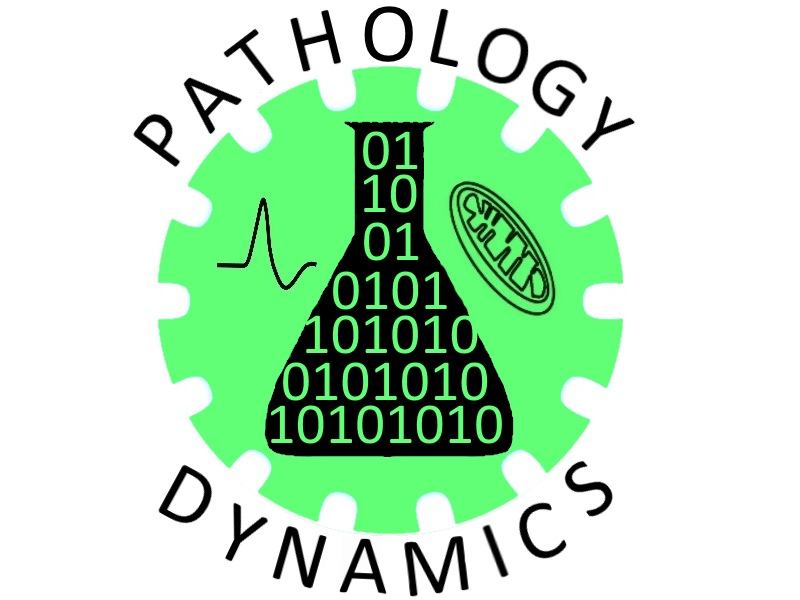

Hello, world! I'm a developer.
=> "Detroit, MI"
> AJAY.education
=> "Georgia Institute of Technology"
> AJAY.major
=> "Computer Science"
> AJAY.expectedGraduation
=> "May 2019"
> AJAY.interests
=> ["Design", "Code", "coffee", "typography", "music", "bicycles", "dogs"]
> AJAY.workExperience.latest
=> Latest Work Experience
company: "Lautrec Limited"
role: "Network Administration Assistant"
startDate: "January 2016"
endDate: "Decemeber 2016"
> AJAY.resume
=> "ajaydeepsingh.pdf"
> AJAY.thoughts
=> ["@aj_ysingh", "instagram: @aj_ysingh "]
> AJAY.email
=> "hello@ajaysingh.me"
Résumé
Education
Georgia Institute of Technology
2013 - 2017
Computer Science, B.S.
Atlanta, GA
Relevant Coursework:
- Computing for Engineers
- Intro to Object-Oriented Programming
- Intro to Discrete Mathematics
- Data Structures and Algorithms
- Systems and Networks
Work Experience
Lautrec Limited
January 2016 - Decemeber 2016
Network Administration Assistant
Farmington Hills, MI
Supported over 200 computers across the country for the largest property management company in Southeast Michigan.
Led project to convert Web Mail service to an innovative solution including migration of 200+ IMAP accounts. Upgraded over 200 computers to new hardware and operating systems. Learned multiple networking properties to create ease of acces for over 60 properties across the United States.
HTMLPHPWordPressGitIllustratorPhotoshop
Pathology Dynamics Lab
January 2015 - May 2015
Research Associate
Atlanta, GA
Analyzed the G93A Superoxide Dismutase-1 transgenic mouse model of amyotrophic lateral sclerosis. Spearheaded the development of a comprehensive database of every quantifiable data point that has been published using this mouse model. Created process improvements in documentation and record keeping by use of excel.
MS OfficeMatLab
 Vanderbilt Center for Bone Biology Biomechanics Lab
May 2014 - Aug 2014
Vanderbilt Center for Bone Biology Biomechanics Lab
May 2014 - Aug 2014
Research Associate
Nashville, Tennessee
Explored the relationship between diabetes and bone strength. Used µCT scanning to determine bone properties. Learned and implemented Raman Micro-Spectroscopy to determine the chemical composition of bones whose collagen content was altered.
MatLabMS Office
Work + Fun
SWAPR (Statistically Weighted Aggregate Peer Review A group project for Georgia Tech's Veritically Integrated Project (VIP). Helps peers grade each others work by assigning confidence scores to the grades each person submits. Working as a designer and developer. Currently in development.